s-t Flow
所謂伊人，在水一方。溯洄從之，道阻且長；溯游從之，宛在水中央。《詩經．蒹葭》
Flow Network
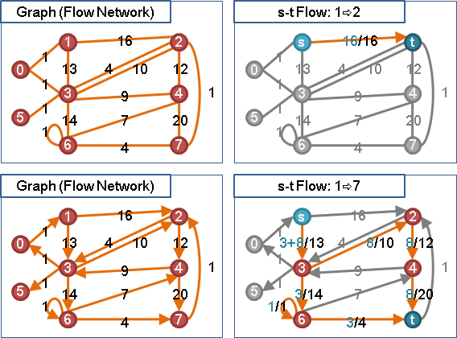把一張圖想成是水流管線圖。圖上的邊想成是水管：邊的權重想成是水管的容量上限（容量下限預設為零），有向邊僅允許單向流動，無向邊得同時雙向流動。圖上的點想成是水管的接合點，並附有控制水流流向與流量的機器：點的權重想成是接合處的容量上限（容量下限預設為零），但是大家一般都不考慮點的權重。
每一條管線的流量數值與容量上限數值，以一斜線區隔，標記於圖上各條邊，方便觀看。水流流動時必須遵守各條管線的容量限制，不得有逾越容量限制之情事。流量數值與容量上限數值一定是正值或零，不得為負值。
在這張水流管線圖當中，水流流速是穩定的、是源源不絕的，有變化的只有水流流向與流量。因此，水流流動時，只要關心各條管線的方向限制和容量限制就可以了。
當一張圖專門用於水流流動時，則可稱之為Flow Network，中譯為「流網路」。
「流網路」只有容量資訊，沒有流量資訊。
s-t Flow
在圖上選定一個源點（source，標記為s）和一個匯點（sink，標記為t），源點灌水，匯點泄水，並控制水流從源點流至匯點，中途不得滲漏、不得淤滯。
s-t Flow以下簡稱為「流」。一個流便是由源點經管線至匯點的水流。一個流的流量，即是源點灌入的水流流量，同時也是匯點泄出的水流流量。
「流」只有流量資訊，沒有容量資訊。
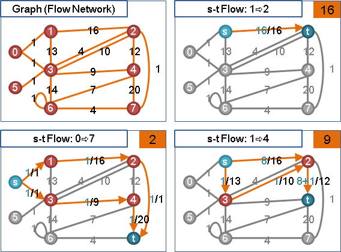
Maximum s-t Flow
「最大流」。給定一張圖，以及給定一個源點與一個匯點，所有可能的Flow當中，流量最大者便是Maximum Flow，可能會有許多個。
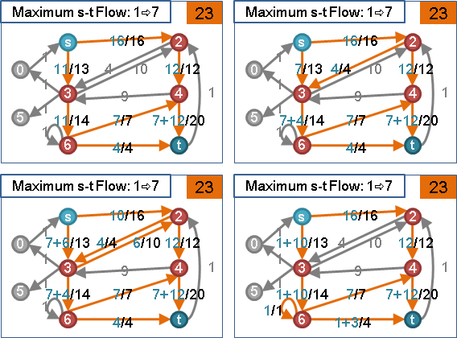在源點一口氣灌入大量的水，藉由調整各條管線的流量與流向，讓匯點泄出的流量最多。
Minimum s-t Flow
「最小流」。一滴水都不流，管線裡都沒水，就是Min-Flow，流量為零。大家應該都懂，所以就討論到這裡了。
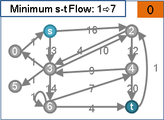圖例：不屬於流的玩意
水流流到無法流動的地方，水流淤滯而無法流至匯點，不能稱作流。
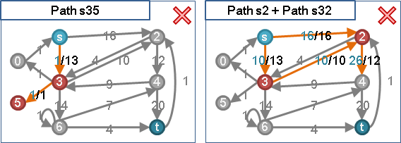圖例：合流、分流、交流
水流可以在任何點上合流、分流、交流──簡單地來說，就是每個點之中，流入與流出的水量要相等，至於要怎麼分合都無所謂。
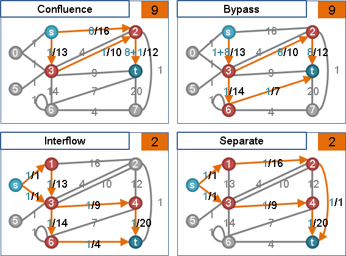圖例：產生迴圈的流
產生迴圈的流會佔據管線容量，令流量難以再增加，是一種浪費。
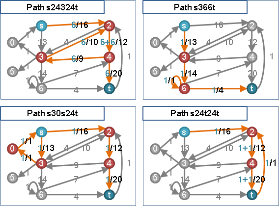圖例：源點與匯點在一起的流
感情很好的兩個點，一般視作內地裡波濤洶湧，表面上流量為零。
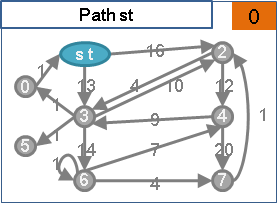多個源點和多個匯點變成一個源點和一個匯點
先前都只討論一個源點和一個匯點的原因，其實是因為多個源點可以轉化成一個源點、多個匯點可以轉化成一個匯點。當圖上有多個源點時，就在圖上新增一個超級源點，連向這些源點，邊的容量都設定為無限大。如此一來，就可以只留下一個超級源點，並取消原本的源點了。匯點的道理亦同。
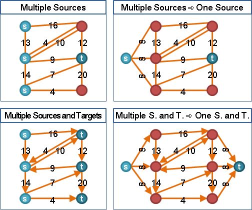因此，在s-t Flow當中，多個源點和多個匯點可以改為一個源點和一個匯點，最後只討論一個源點和一個匯點就可以了。事情也變簡單多了。
點的容量變成邊的容量
先前提到大家一般不考慮點的容量，其實是因為點的容量可以轉化為邊的容量。把P點改成兩個點Pin和Pout，原先連到P點的邊變成連到Pin，由P點連出的邊變成由Pout連出，P點的容量則由一條Pin到Pout的邊來取代之。
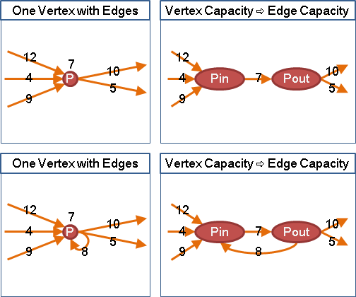因此，在s-t Flow當中，點的容量可以改為邊的容量，最後只需要考慮邊的容量就行了。只考慮邊的容量，事情也變簡單多了。
多重的邊變成單獨的邊
無向圖中，當兩點之間有多重的邊，就可以加總這些邊的容量限制，合併成單獨的邊；有向圖中，當一點到另一點有多重的邊，就可以加總這些邊的容量限制，合併成單獨的邊。
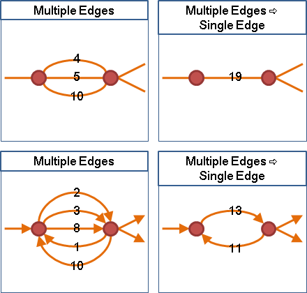因此，在s-t Flow當中，多重的邊可以改為單獨的邊，最後只討論「無向圖：兩點間僅有一條邊、有向圖：一點到另一點僅有一條邊」就可以了。事情也變簡單多了。
來回水流變成單向水流
兩點之間，兩條方向相反的有向邊，等量減少來向與回向的水流，不會影響總流量，也不會違背規則。
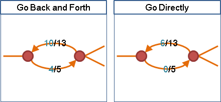因此，在s-t Flow當中，來回水流可以變成單向水流，最後只要從中選擇一條邊來流動就可以了。事情也變簡單多了。
無向邊變成有向邊
無向邊得同時雙向流動。一條無向邊可以改為兩條方向相反的有向邊，可是必須共用容量。
由於來回水流可以變成單向水流，所以上述兩條方向相反的有向邊，其實不必共用容量，宛如普通的有向邊。
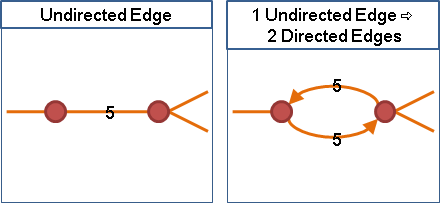因此，在s-t Flow當中，一條無向邊可以變成兩條方向相反的有向邊，最後只討論有向邊就可以了。事情也變簡單多了。